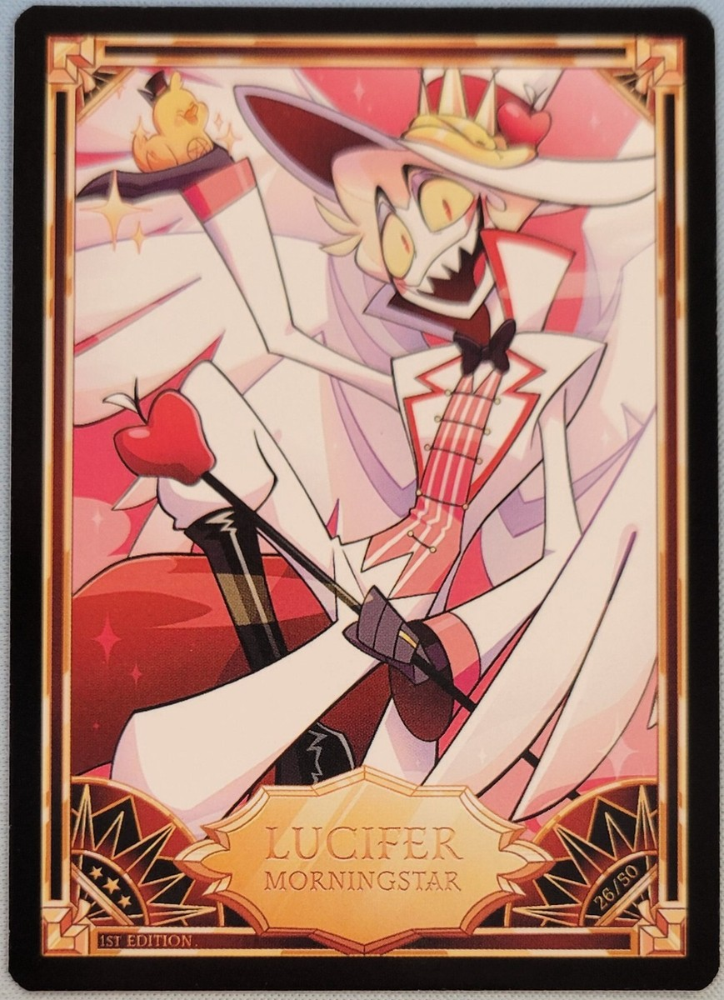

Buenos días mundo
Enlace

WENASSSS
Satoru Gojo (五条悟 Gojō Satoru?) es uno de los personajes de la serie manga Tokyo Metropolitan Curse Technical School y uno de los protagonistas de la serie secuela, Jujutsu Kaisen. Conocido con el apodo de El Chamán Más Fuerte (最強の呪術師 Saikyō no Jujutsu-shi?), es uno de los cuatro chamanes de Clase Especial, antiguo compañero de Suguru Geto y Shoko Ieiri, y actual profesor del Colegio Técnico de Magia Metropolitana de Tokio, encargado de los alumnos de primer año. Como único miembro y cabeza del Clan Gojo, es descendiente del chamán y espíritu vengativo, Sugawara-no-Michizan[3], y heredero de la Técnica de Maldición Ilimitada y el poder de los seis ojos. Desde el día de su nacimiento, se produjo un balance de poder entre la humanidad y las maldiciones; la caída de su clan y por ende, su muerte, significaría perder dicho balance, provocando una guerra a gran escala que sería difícil de ganar para la humanidad[4].